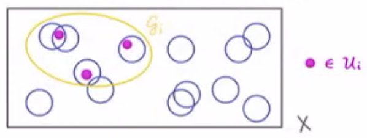

how do you pick the right chart to show your data?
And once you've picked it — how do you tailor it to fit your use case?
the most common approach: a simple heuristic
discrete comparisons
trends over time
Convenient — especially when it's a problem you've seen before.
But picking the chart type is only step one.
then what?
can't we just ask a model?
Models are getting good at step 1. Sometimes step 2.
But the micro-decisions — which color encodes which dimension, which values deserve a label, whether a stacked or small-multiples layout better supports your reader's query — these require knowing what you're trying to say.
A model that can't articulate the tradeoff can't reliably make the call. Neither can a chart-chooser diagram.
graphics don't always fall into neat taxonomies




To design these, you have to understand how they work — not just what to call them.
what's the first trend you notice?
how about now?
same data · same chart type · different afforded message
The data didn't change. The structure did — and that changed what you could query at a glance.
- The first weight is suspended from the left end of a rope over Pulley A.
- The right end of this rope is attached to, and partially supports, the second weight.
- Pulley A is suspended from the left end of a rope that runs over Pulley B, and under Pulley C.
- Pulley B is suspended from the ceiling.
- The right end of the rope that runs under Pulley C is attached to the ceiling.
- Pulley C is attached to the second weight, supporting it jointly with the right end of the first rope.
- Set W1 = 1
- What is affected by W1?
- [S1] Left end of rope over PA
- What is PA attached to?
- [S1→S2] "this rope" = PA, so W2
- [S2→S3] PA suspended over PB under PC
- What is PC attached to?
- [S3→S4] irrelevant
- [S4→S5] PC supported by ceiling
- What is PA attached to again?
Find the ratio of the second to the first weight, if the system is in equilibrium.
- Set W1 = 1
- What is affected by W1?
- [W1→PA] W1 goes over PA
- [PA→W1] to W2
- [PA→B] and connected to B
- …
Find the ratio of the second to the first weight, if the system is in equilibrium.
diagrams can efficiently encode relational information in space
"A points to B", "B points to C", "A points to C" — what does A point to?
"Everything that points to A" or "everything A points to" are simple perceptual tasks of following lines.
Larkin and Simon. "Why a Diagram is (Sometimes) Worth Ten Thousand Words." 1987
thinking about graphics structurally, not taxonomically
Instead of asking
"which chart type fits my data?" —
ask
"what structure do I need to support the queries I want?"
Picking a chart type is a convenient shortcut when the answer is obvious. But structure is the underlying thing.
To talk about visual structure precisely, we need a language.
A compositional language for visual structure —
open source, JS/TypeScript with Python bindings.
It's formal — but you can use it informally if you ignore most of
the attributes.
Let me show you.
our first GoFish spec
chart(data)
.flow(
spread("lake", dir="x"),
)
.mark(
rect(h="count")
)our first GoFish spec
chart(data)
.flow(
spread("lake", dir="x"),
)
.mark(
rect(h="count")
)our first GoFish spec
chart(data)
.flow(
spread("lake", dir="x"),
)
.mark(
rect(h="count")
)Familiar territory. Nobody's impressed yet.
Data schema
lake: discreteused in
spread()
count: continuousmapped to height
Tasks / queries this structure affords
The move: stack()
chart(data).flow(
spread("lake", dir="x"),
stack("species", dir="y"), # ← new
).mark(
rect(h="count", fill="species") # ← fill
)One new operator. One new channel.
Part-to-whole queries now possible.
Direct cross-lake comparison got harder —
subcategories no longer share a baseline.
Data schema
lake: discrete → species: discretepart-to-whole within lake
count: continuousspecies: discrete
(mapped to fill)
Tasks / queries this structure affords
A grouped bar would make exact readings much easier.
The move: connect the stacks into a continuous ribbon
Layer([
chart(data).flow(
spread("lake", dir="x", spacing=64),
derive(lambda d: sorted(d, key="count")),
stack("species", dir="y"),
).mark(
rect(h="count", fill="species").name("bars") # ← name it
),
chart(select("bars")) # ← new layer
.flow(group("species"))
.mark(area(opacity=0.8)),
])Data schema
lake: discrete → species: orderedpart-to-whole within lake; sorted by count
count: continuousspecies: discrete
(fill)
species: contiguousarea links bars of the same species across
lakes
Tasks / queries this structure affords
The move: wrap into polar coordinates
Layer({"coord": clock()}, [ # ← one change
chart(data).flow(
spread("lake", dir="x",
spacing=2π/6, mode="center"),
derive(lambda d: sorted(d, key="count")),
stack("species", dir="y"),
).mark(
rect(w=0.1, h="count", fill="species").name("bars")
),
chart(select("bars"))
.flow(group("species"))
.mark(area(opacity=0.8)),
])Data schema
lake: discrete → species: ordered
count: continuous, species: discrete
species: contiguousSame structure as the ribbon — only the coordinate system changed.
Tasks / queries this structure affords
The move: highlight one species
Tasks / queries this structure affords
Keeping structure fixed — steering attention with color
The structure is the stacked bar. Nothing about the GoFish spec changes. But color choices decide which queries you're promoting.
You're not "reducing clutter." You're choosing which queries to promote and which to demote.
[same chart — annotations placeholder]
Tasks / queries — what are we steering attention toward?
What just happened
We took one dataset and made a series of deliberate structural moves.
Each move changed what was easy to see.
None of these moves required picking from a menu — they were transformations of a continuous underlying structure.
The chart type labels — bar, stacked, ribbon, polar — are just snapshots along the way.
Our GoFish spec
chart(scatter_data).flow(
scatter("lake", x="x", y="y")
).mark(
lambda data:
chart(data[0]["collection"],
coord=clock())
.flow(stack("species", dir="x"))
.mark(rect(w="count", fill="species"))
)Outer structure: scatter affords "where?" queries.
Inner structure: pie affords "what fraction?" queries.
The mark method takes a chart — same as faceting.
Data schema
Tasks / queries this structure affords
Same outer structure — swap the inner glyph
# Outer scatter: unchanged.
# Inner glyph: petals instead of pie slices.
# Petal length → magnitude comparison
# (vs. pie slice → proportion comparison)
chart(scatter_data).flow(
scatter("lake", x="x", y="y")
).mark(
lambda data: Frame(
StackX(h=total(data)/7, [
Petal(w=d["count"], fill=colors[i])
for i, d in enumerate(data[0]["coll"])
]),
coord=polar()
)
)Data schema
Tasks / queries — what changed because the glyph changed?
Same move again
# Same outer structure.
# Inner glyph: balloons.
# Scale → magnitude (area encoding).
# Different affordances again.
chart(scatter_data).flow(
scatter("lake", x="x", y="y")
).mark(
lambda data: Balloon(
scale=data[0]["total"] / max_total,
color=palette[data[0]["dominant"]]
)
)Data schema
Tasks / queries this structure affords
You have choice — and now you know how to make it
Three visualizations a typology would treat as unrelated chart types.
But they share the same outer structure and differ only in the inner glyph.
Once you see it structurally, the choice becomes deliberate: which inner query do you want to afford?
There are real tradeoffs — familiarity, legibility, precision. But the query-affordance frame tells you how to reason about them.
Making a chart is more than showing your data.
It's designing a data structure your readers will query with their eyes.
Our tools should help us be deliberate about that structure — not just pick from a menu of chart types.
GoFish is one attempt at that. I'm still figuring out where the boundaries are.
I'd love to hear — in Q&A, in the hallway, on GitHub — where this does and doesn't match problems you actually have.
Try it
🌐 Docs: gofish.graphics
🐙 GitHub:
starfish-graphics/gofish-graphics